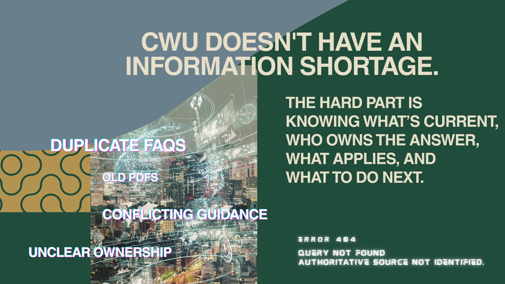
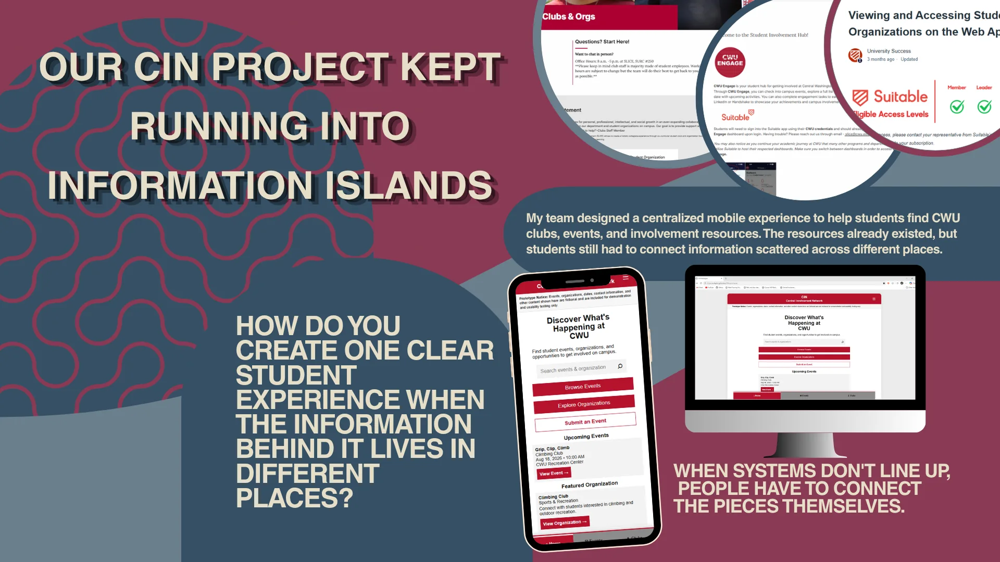
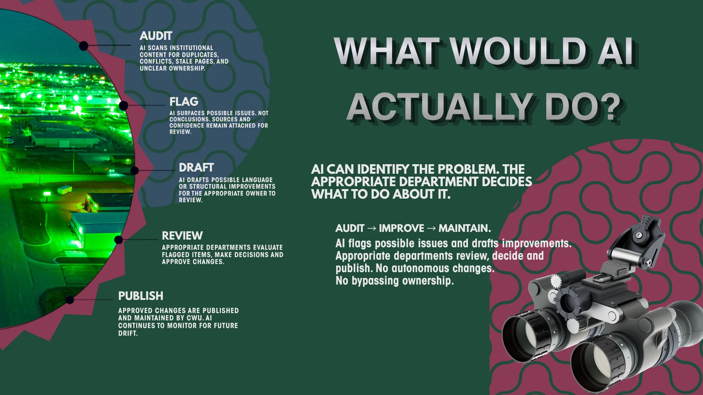
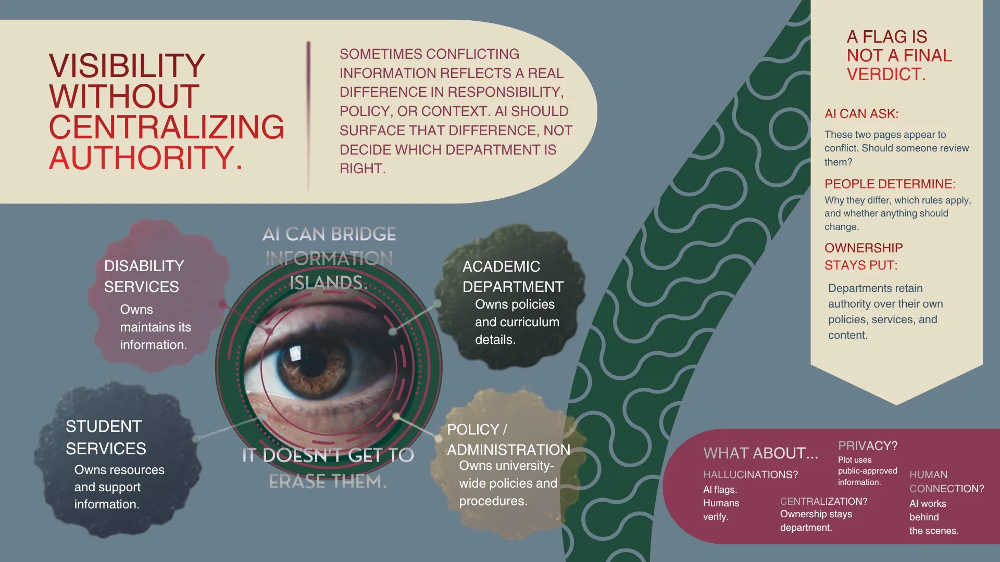
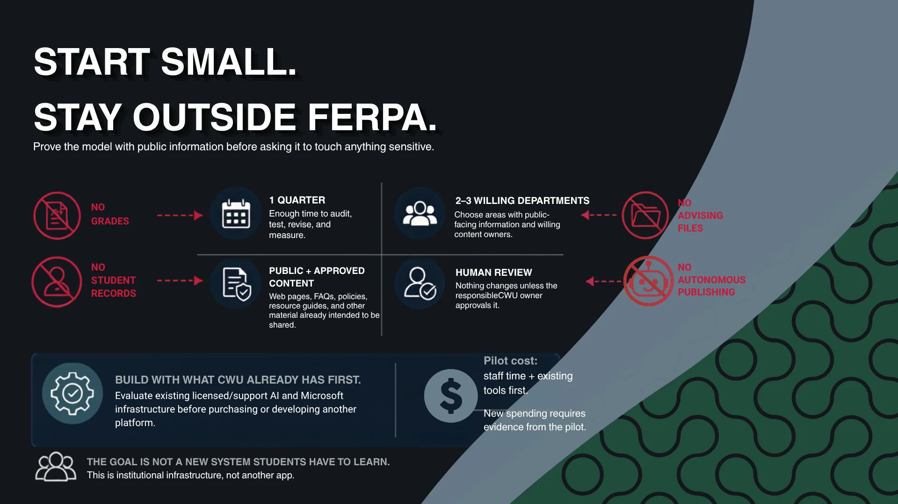
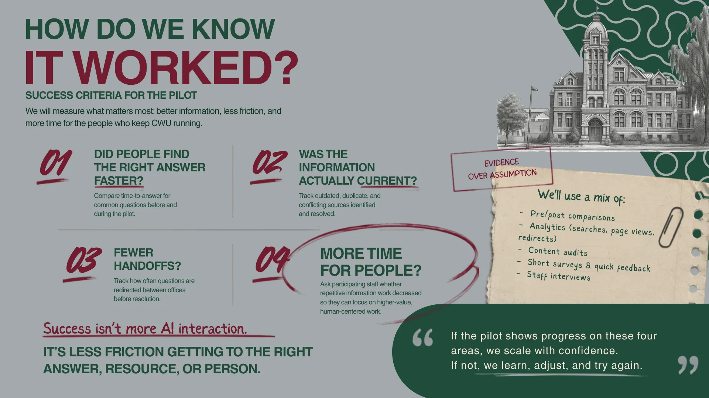

One quarter
Enough time to audit, test, revise, and measure without proposing a university-wide transformation.
AI behind the scenes. Humans out front.
A proposal for using AI to help identify informational friction across approved institutional content—without turning AI into the authority, another student-facing layer, or an autonomous publisher.
I began by asking how AI might improve CWU’s student-facing digital experience. The investigation changed direction when I realized another student-facing AI tool could become another layer between students and the people they actually need.
The problem I identified was not an information shortage. Institutional information can live across webpages, PDFs, FAQs, departmental resources, policies, and other systems. The friction is determining what is current, which source is authoritative, who owns the answer, what applies, and what someone should do next.
That reframed the project: instead of generating more answers for students, could AI help CWU better understand and maintain information it already has?
Students can encounter duplicate FAQs, old PDFs, unclear ownership, or guidance that appears contradictory. Those experiences do not automatically prove a systemic failure, but they create a useful question to investigate.
I deliberately separated observation from evidence. My own experience helped identify the problem space; it was not enough to establish the scale or cause of the problem.
The student-facing navigation problem may partly reflect how institutional information is distributed, maintained, and owned behind the scenes.


While working on the Central Involvement Network project, my team was trying to create one coherent student experience from involvement information that already existed across different places. That made the underlying systems problem more visible.
The connection changed my needs analysis: student-facing modernization and institutional knowledge management were not separate opportunities. The student-facing friction could be a symptom of disconnected information behind the interface.

The proposal gives AI a deliberately narrow job. It can audit approved content for duplication, potentially stale pages, conflicts, accessibility issues, and unclear ownership. It can flag possible issues while preserving sources and confidence. It can draft possible language, accessibility, organization, or update improvements.
Then its authority stops.
People review. People decide. People publish. The responsible department determines whether something is actually wrong, what policy applies, whether a change is appropriate, and what becomes official.
AI identifies something worth reviewing; it does not become an institutional decision-maker.
Different departments can publish information that appears contradictory for legitimate reasons: their responsibilities, audiences, policies, and decision rights differ. A cross-institutional AI layer should not flatten those boundaries.
The proposed system can surface a possible conflict—“These two pages appear to differ. Should someone review them?”—but people determine why they differ, which rules apply, and whether anything should change.
Departments retain authority over their own policies, services, and content. AI helps make information islands visible without erasing who owns them.

Enough time to audit, test, revise, and measure without proposing a university-wide transformation.
Work with public-facing information and content owners who opt into the pilot.
Webpages, FAQs, policies, resource guides, and other material already intended to be shared.
No autonomous publishing. Nothing changes unless the responsible owner approves it.
The proposal also calls for evaluating technology CWU already licenses or supports before buying or developing another platform. The pilot cost should begin with staff time and existing infrastructure; new spending should require evidence that the pilot is worthwhile.


Because the idea began partly from observation and personal experience, the evaluation plan matters as much as the intervention. I proposed four questions: did people find the right answer faster; was information more current; were there fewer handoffs; and did participating employees regain time for higher-value human-centered work?
Possible evidence includes pre/post comparisons, search and page analytics, content audits, short feedback surveys, and staff interviews.
If AI interaction increases but navigation does not improve, the proposal has not solved the problem.
More accurate information when they need it, fewer unnecessary handoffs, and more confidence in the next step.
Less repetitive compensation for confusing information and more capacity for work requiring expertise and human connection.
Clearer ownership and more consistent information without surrendering control of departmental content.
Information that is easier to trust, maintain, and govern responsibly.
I started with a digital-experience problem and expected the answer might involve more student-facing AI. The investigation pushed me in the opposite direction.
When a situation is complicated, the goal should not be to automate the relationship between a student and the institution. The better intervention may be to reduce the informational friction that happens before the right human conversation can occur.
That is the idea behind the project’s closing line: AI behind the scenes. Humans out front.
This presentation walks through the investigation, proposed AI operating model, governance boundaries, pilot design, and measures I would use to determine whether the intervention actually reduced institutional information friction.
The next step would not be building a university-wide system. It would be validating the problem with content owners and users, selecting a small public-information corpus, defining ownership and review workflows, auditing existing supported technology, establishing a pre-pilot baseline, and then running the bounded one-quarter experiment.
If the evidence shows better information, fewer unnecessary handoffs, and more human capacity, scale carefully. If not, learn, adjust, or stop.